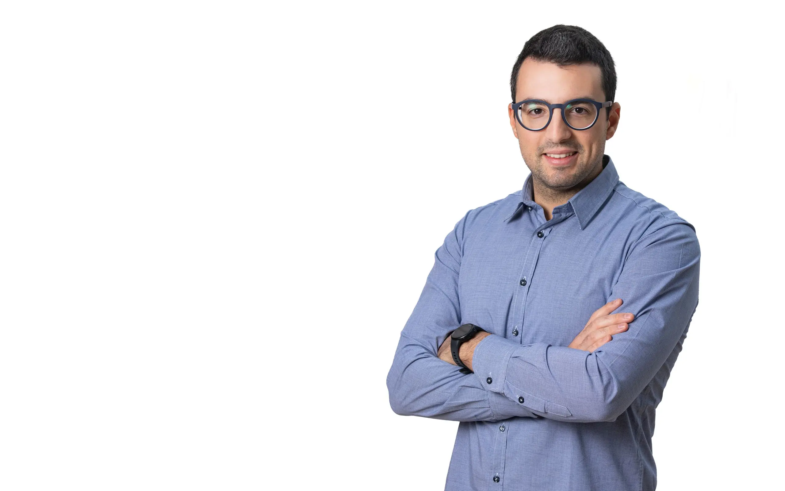
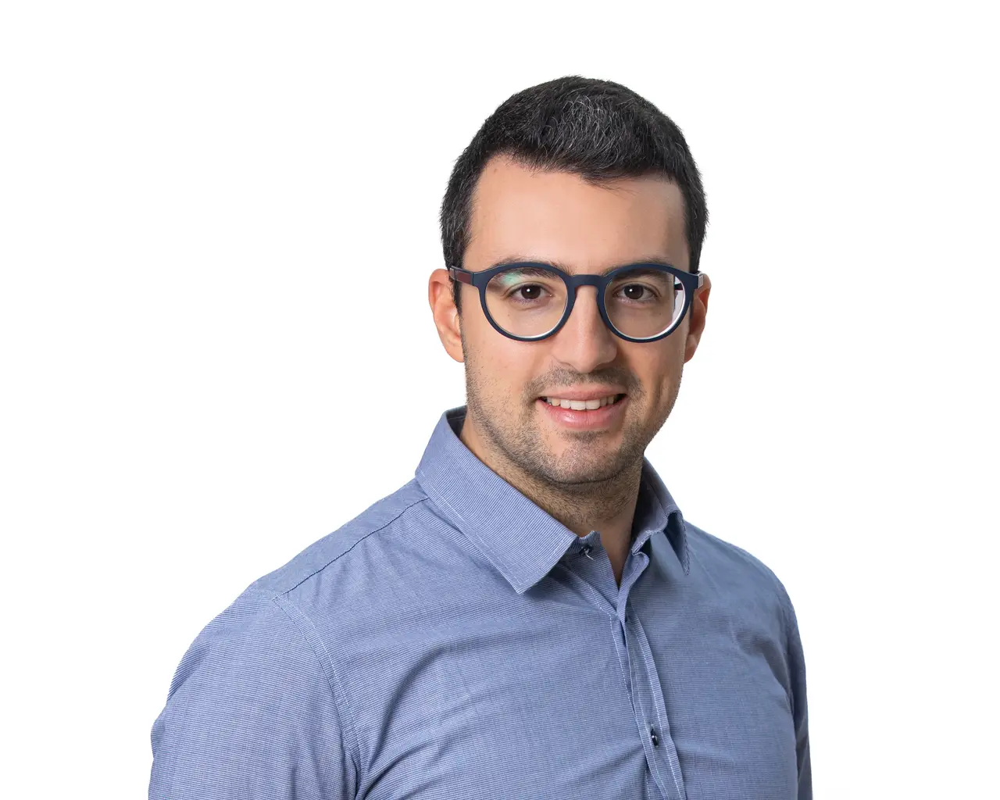
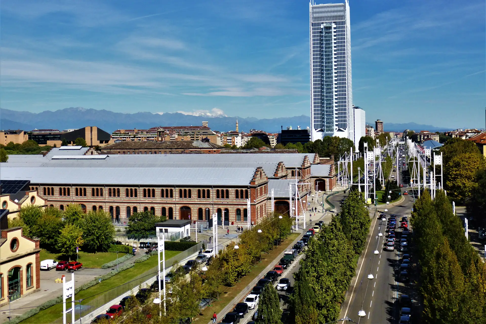
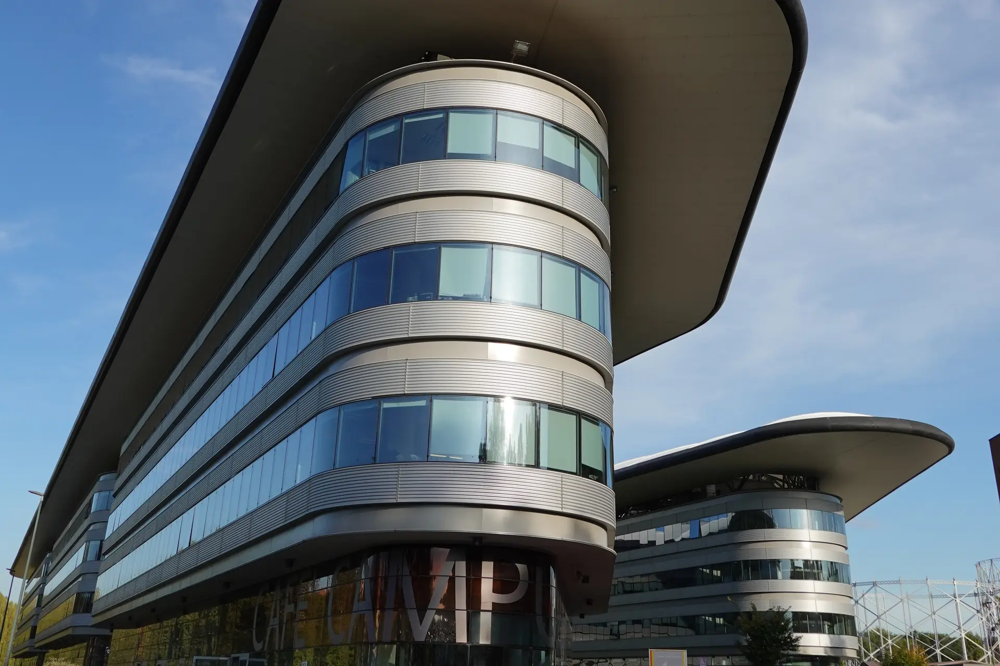
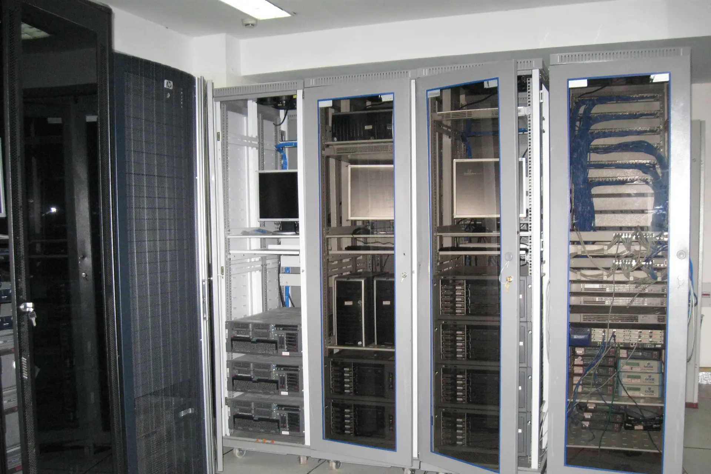
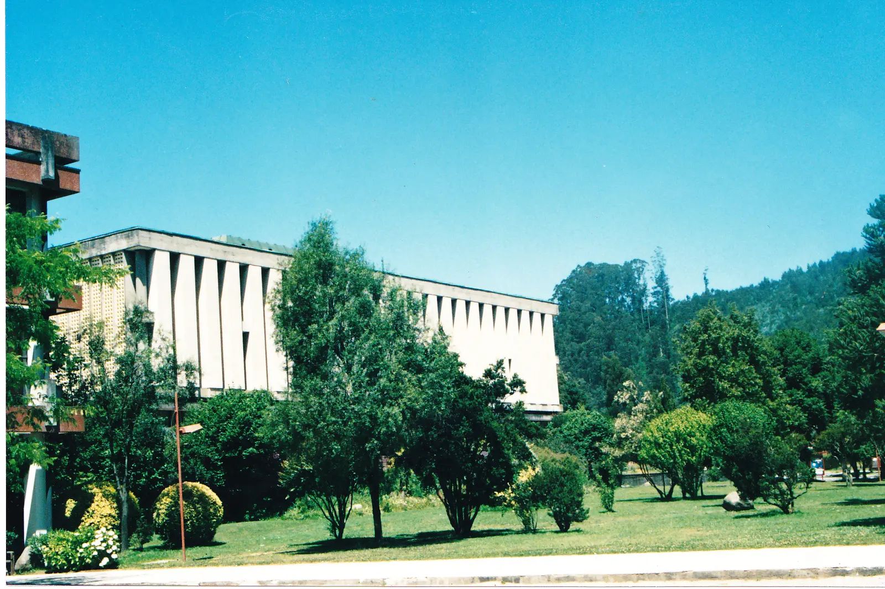
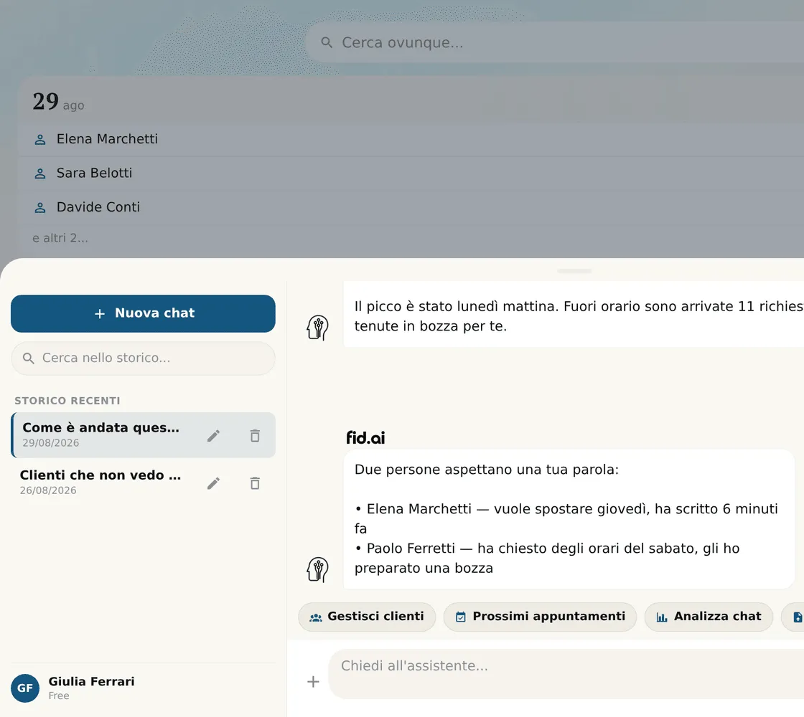
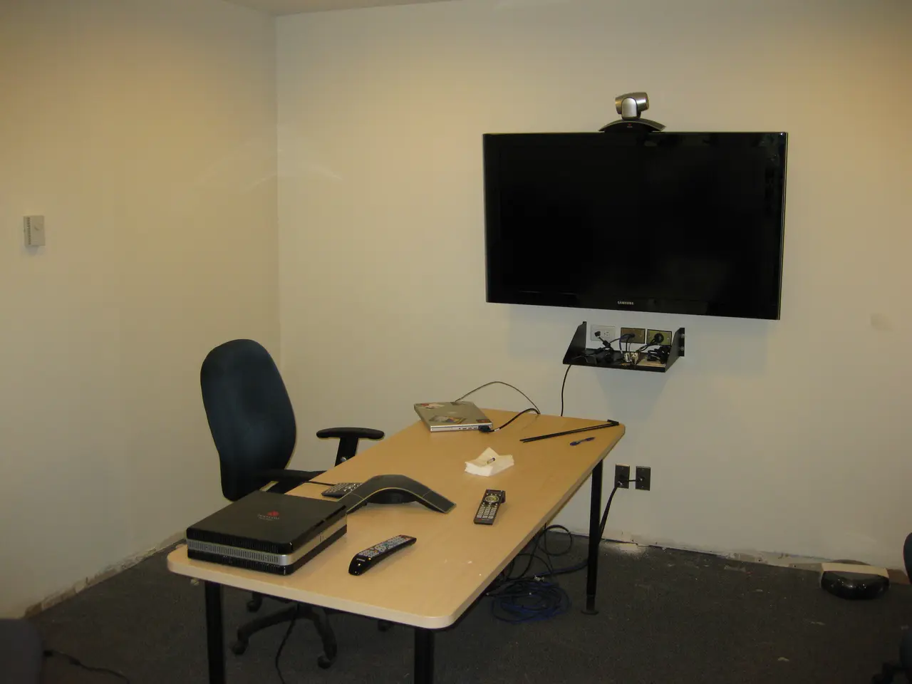
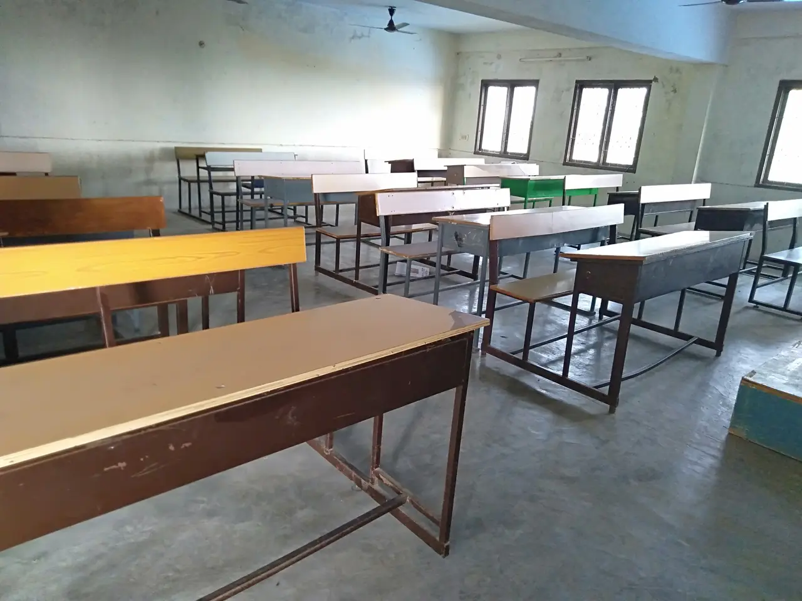

Software con l'IA, da Torino
Sono Luca Bertaggia, dal 2025 founder e product lead di fid.ai. Progetto software con l'IA e rendo automatici i processi ripetitivi.
Meno lavoro ripetuto a mano
Vengo dal mondo accademico, dove ho iniziato ad automatizzare con l'IA i processi amministrativi più noiosi. Oggi sono founder e product lead di fid.ai e socio di Dotspace.
Smonto i sistemi che le persone ripetono a mano e li rimonto in flussi autonomi, per togliere lavoro superfluo. Uso IA, pipeline RAG e orchestrazione di LLM.
Sicurezza, permessi e dati personali vengono sempre al primo posto.

whoami
Costruisco software che fa il lavoro noioso al posto delle persone. Lavoro a Torino, con un server acceso h24. Adesso insegno a una segreteria a rispondere ai clienti da sola: si chiama fid.ai.
Il percorso, dall'università a fid.ai
Dalla ricerca all'ufficio tirocini, poi un'azienda mia e una borsa di mobilità in Cile. Scarica la presentazione
-

2016–2022: Scienze motorie a Torino
Triennale con 110/110, magistrale con 105/110 e dignità di stampa, due Erasmus+ all'Universidad de Almería e una ricerca sul benessere dopo la pandemia, presentata al Convegno SIPI di Padova.
-

Dal 2023: ufficio tirocini dell'Università di Torino
Oltre 800 enti convenzionati. Invece di gestirli a mano ho realizzato i primi automatismi, e la qualità del servizio è salita.
-

Dal 2025: fid.ai e Dotspace
Fondo fid.ai e lo porto dall'idea al server. Divento socio di Dotspace, con tre sviluppatori.
-

2026: Universidad de Concepción, Cile
Una borsa di mobilità per studiare come gestiscono i tirocini e come creare partnership formative.
Progetti che porto avanti
Software, formazione e un'azienda giovane: li seguo dall'idea al server.
- fid.ai
La tua segreteria digitale e intelligente: gestisce per te le richieste di tutti i tuoi clienti. Apri fidai.it
Founder - Facilitazione d'aula
Progetto e conduco i webinar di formazione manageriale di Towers Watson Italia e Challenge Network: due ore, duecento persone collegate.
Webinar - Formazione IA a scuola
Trenta ore per i docenti dell'IC Inzago: quindici incontri e un kit di attività pronte da usare in classe.
30 ore - Dotspace
L'azienda di cui sono socio con tre sviluppatori: software su misura per aziende e professionisti, nata da poco.
Socio


